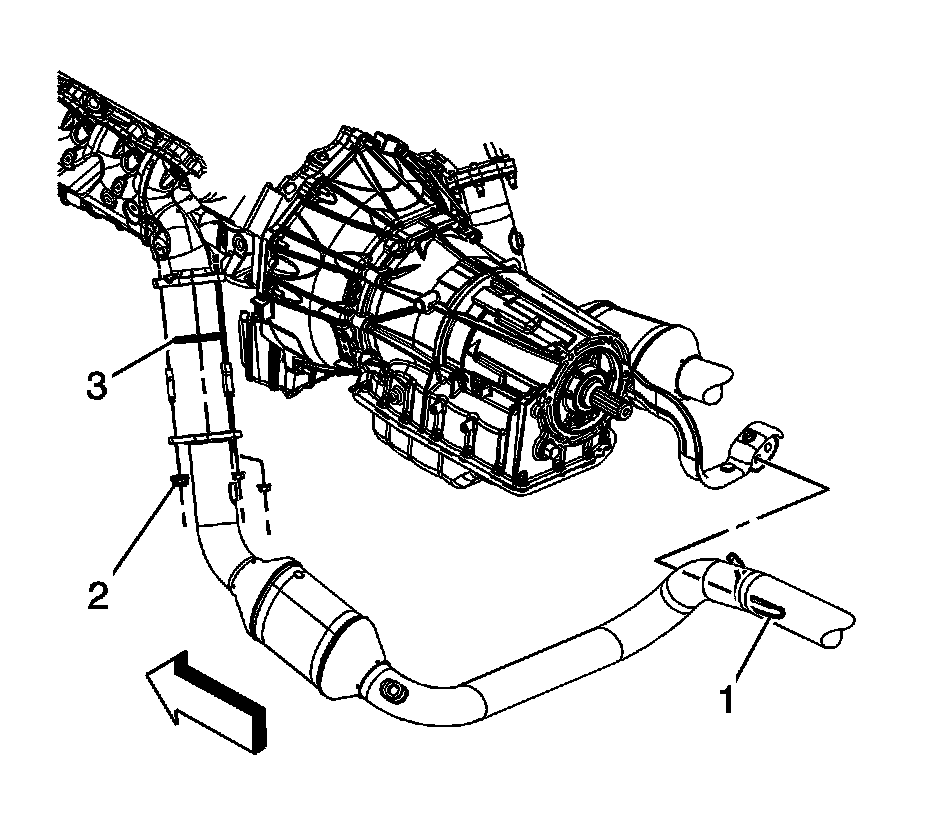

Catalytic Converter Replacement - Left Side (2500 Series)
Catalytic Converter Replacement - Left Side (2500 Series)
Removal Procedure

1. Raise and support the vehicle. Refer to Lifting and Jacking the Vehicle.
2. Loosen the 2 rear oil pan skid plate bolts, remove the 2 front oil pad skid plate bolts and skid plate, if equipped.
3. Remove the muffler. Refer to Muffler Replacement.

4. Remove the left front connector position assurance (CPA) retainer (2).
5. Disconnect the left front heated oxygen sensor (HO2S) electrical connector (2) from the engine wiring harness electrical connector (3).

6. Remove the left rear CPA retainer (1).
7. Disconnect the left rear HO2S electrical connector from the engine wiring harness electrical connector (3).

8. Remove the catalytic converter to exhaust manifold nuts (2).
9. Separate the catalytic converter from the exhaust manifold studs.
10. Slide the catalytic converter hanger (1) out from the hanger bracket.
11. If replacing the catalytic converter perform the following steps, otherwise proceed to step 4 in the installation procedure.
12. Remove the exhaust seal (3) as required.

13. Remove the HO2S's (1 and 4).
Installation Procedure
Important: A special anti-seize compound is used on the HO2S threads. The compound consists of liquid graphite and glass beads. The graphite tends to burn away, but the glass beads remain, making the sensor easier to remove. New, or service replacement sensors already have the compound applied to the threads. If the sensor is removed from as exhaust component and if for any reason the sensor is to be reinstalled, the threads must have anti-seize compound applied before the reinstallation.
1. If replacing the catalytic converter assembly, perform the following steps, otherwise proceed to step 4.
2. If reinstalling the old sensors, coat the threads with anti-seize compound GM P/N 12377953, or equivalent.
Notice: Replacement components must be the correct part number for the application. Components requiring the use of the thread locking compound, lubricants, corrosion inhibitors, or sealants are identified in the service procedure. Some replacement components may come with these coatings already applied. Do not use these coatings on components unless specified. These coatings can affect the final torque, which may affect the operation of the component. Use the correct torque specification when installing components in order to avoid damage.
Notice: Refer to Fastener Notice.
3. Install the HO2S's (1 and 4) to the catalytic converter assembly.
Tighten the sensors to 42 N.m (31 lb ft).
4. Install the NEW exhaust seal (3) as required.
5. Slide the catalytic converter hanger (1) into the hanger bracket.
6. Install the catalytic converter to the exhaust manifold studs.
7. Install the catalytic converter to exhaust manifold nuts (2).
Tighten the nuts to 50 N.m (37 lb ft).
8. Connect the left rear HO2S electrical connector to the engine wiring harness electrical connector (3).
9. Install the left rear CPA retainer (1).
10. Connect the left front HO2S electrical connector (2) to the engine wiring harness electrical connector (3).
11. Install the left front CPA retainer (2).
12. Install the muffler.
13. Position the oil pan skid plate and tighten until snug the 2 rear oil pan skid plate bolts, install the 2 front oil pan skid plate bolts, if equipped.
Tighten the bolts to 28 N.m (21 lb ft).
14. Lower the vehicle.